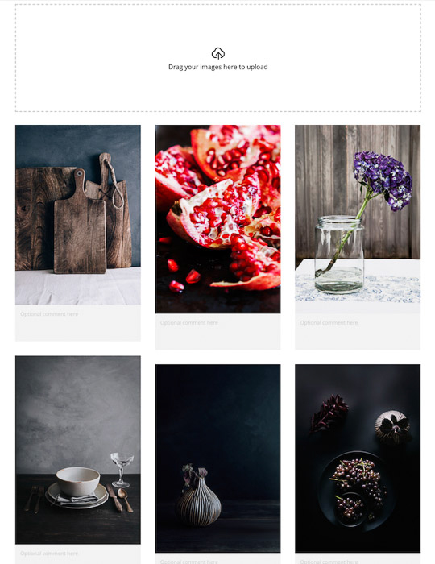
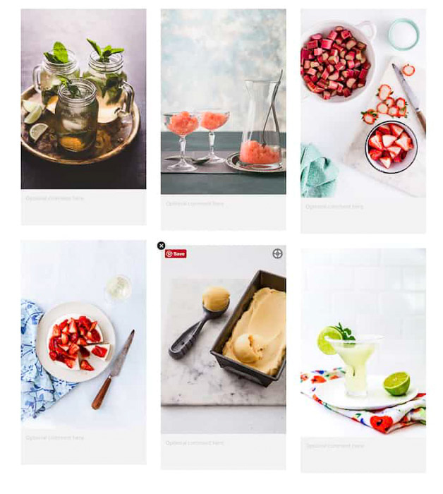
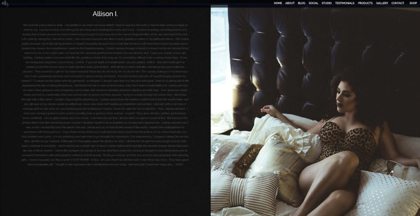

ow to make money as a photographer is one of the most asked questions. Starting and running a photography business is a lucrative venture. But it is easier when photography is your passion.
We have collected all the information you’ll need from how to start a photography business to how to price your work. No matter where you are with making money from photography, you’ll find this an informative complete guide.
If you’re not sure how to start your photography business, this is the article for you. It will help guide you through the start of your business to finding potential clients.
Target markets, finances, and a long-term vision are all part of a successful photography business. You’ll find them all in this post.
One of the most important aspects of starting a photography business is that it will take time to do so. This is not only normal but can provide you with a robust and healthy path to success.
A photography business plan is a plan to get your photography business up and running. Sounds, simple, right?
Through our article, you’ll find a comprehensive understanding of the expected financial commitments. If the plan is for you or your team to follow, then it doesn’t have to be formal.
If you have ties to an investment or borrowed money from a financial institution, you’ll need a plan.
Go through our article and take from it what you need. A successful business plan is the best foot forward towards a successful photography business.
Working with a client for a photography shoot might not be the stress-free situation you envisioned.
Luckily, we have the information on how you can best prepare for this eventuality. After all, the client is the one that has to OK all creative ideas and processes.
One of the best things you can do is to scout for a good location ahead of time. It will show your professional photography intent while ensuring you are in the best place for your work and style.
Something like this can go a long way in making the client happy and then bring more work to your photography business.
A mood board is a great way to visualize your photography concept. It gives you a better idea of what will work and what won’t. This is especially helpful when you are working with clients.
By creating a mood board, you help the clients visualize the process and how to obtain that final series. It can show them a better idea of what will work and what won’t.
A mood board is a simple thing to throw together but can have the biggest impact. If your client is happy and knows what to expect from the shoot, your workflow will improve.
A boudoir photography shoot is different from a fashion or glamour photography session. Most boudoir models aren’t trained models with experience, but real people.
Interacting with your clients is vital. Creating an experience for the clients goes a long way. Relating and interacting with them helps to cultivate trust. By achieving this, they are more likely to work with you in the future.
Be consistent in your communication and ensure there are no misunderstandings. You are free to stand your ground on what you know will work better. But remember, they have the final creative say.
